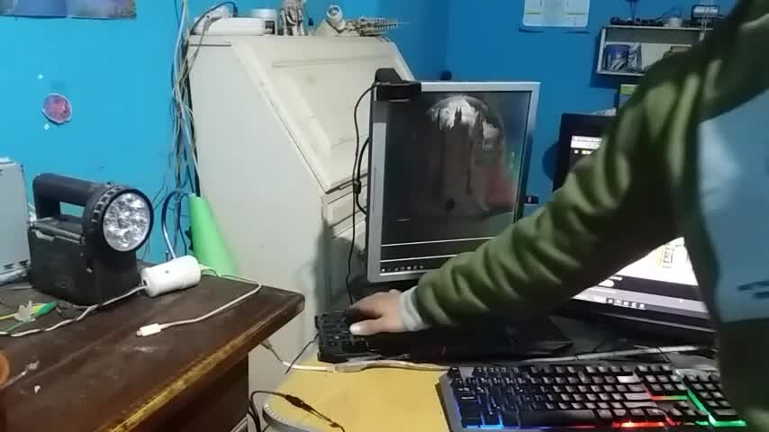
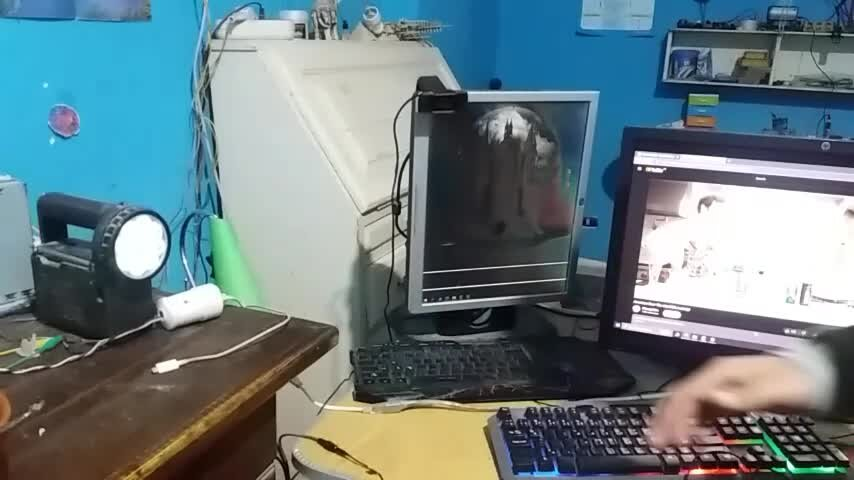

Overview
A custom hardware/software macro interface that turns a second, cheap USB keyboard into a dedicated macro pad. Low-level device drivers isolate the secondary keyboard from the operating system, raw keystrokes trigger system-level macros (such as OBS scene switching), and a USB serial link to an Arduino physically switches the room lighting through relays.
Working demo
Typing on the secondary keyboard switches the room light through the Arduino-driven relay.
System architecture
1. Input interceptionRaw input from the secondary keyboard is captured through the Interception driver API and isolated by hardware ID, so it never collides with normal typing in the OS.
2. Serial pipeline (AutoHotkey)An AutoHotkey v2 script translates specific keystrokes into commands and sends them over a USB CDC/serial connection.
3. Hardware execution (Arduino)The Arduino parses the serial buffer and toggles GPIO pins wired to relays on the room lighting circuit.
Photos


Tools and skills shown
AutoHotkey v2, Interception driver API (low-level OS device hooking and input isolation), Arduino (C++) serial buffer parsing, USB CDC/serial communication, relays. End-to-end mechatronic testing and hardware prototyping.